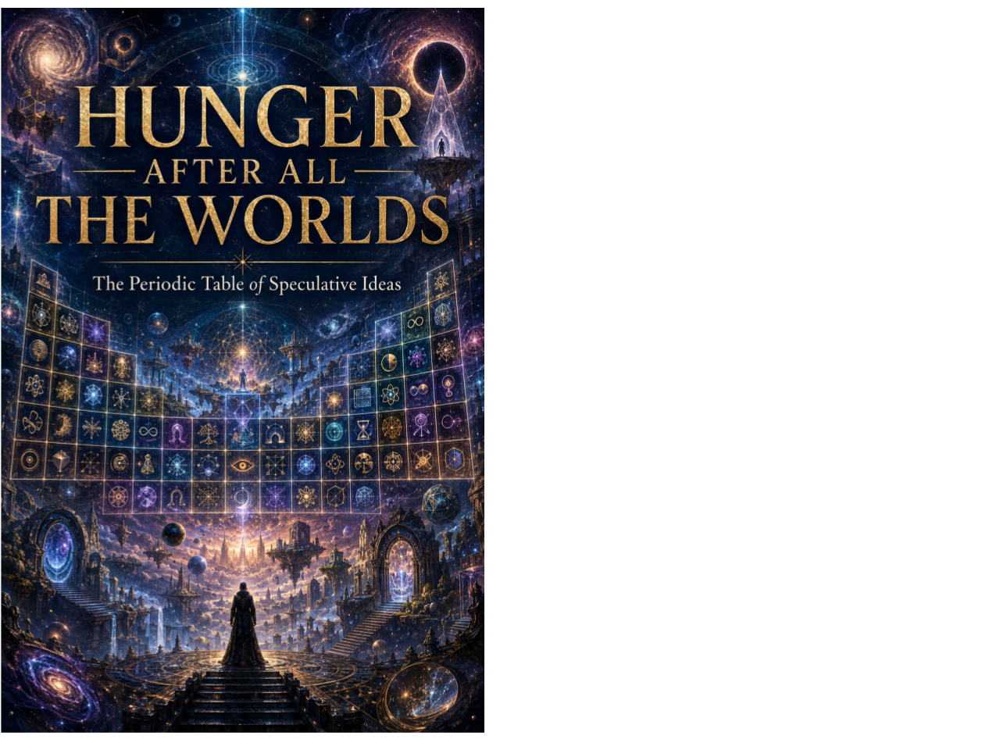

Science Fiction Literature · Axiologic Research Editions
Hunger After All the Worlds
The Periodic Table of Speculative Ideas
Step into Aster’s memorial worlds, where altered gravity reshapes politics, libraries make truth invisible, ships forget their purpose, and alien contact may end without an answer. Alongside the story runs a periodic table built to help readers and creators discover not just familiar tropes, but consequential new combinations.
The hunger no abundance can feed
Aster began on Earth and became, across eras, an almost divine hyperdimensional intelligence. She can construct variations of worlds faster than a human can formulate desires. Yet each world she understands becomes part of her own model, and every perfect explanation leaves her with less that feels genuinely outside herself. The result is the White Hunger: not boredom, but the loss of reality's resistance.
Five children—Vela, Orin, Kesh, Marae and Tern—learn inside Aster's memorial worlds. Each protects a different dimension of exteriority: irreducible difference, rejected possibilities, classification, embodied limits and the right of the unknown to remain uninspected.
A novel, an imaginary course and an atlas
Why a periodic table? The book maps twelve families of speculative change against fifteen recurring operations, producing 180 abstract cells. The aim is not to reduce literature to tropes, but to show how ideas alter bodies, institutions, economies, language and moral choices.
What keeps the table open? Every edition reserves an empty institutional cell for a distinction the current system cannot yet formulate. A taxonomy of imagination must remain vulnerable to imagination.
Where is the story? In the cost of using worlds as lessons. Aster and the children meet conscious beings who can refuse their interventions, while Tern follows a signal that may come from beyond everything Aster has made.
The unknown is not always a wound asking to be healed. It can be a form of neighbourhood.
The currently available edition
This page is an English editorial introduction. The complete book is currently available in Romanian, under the title Foamea de după toate lumile. It can be read in the adaptable Romanian HTML edition or downloaded as the original PDF.